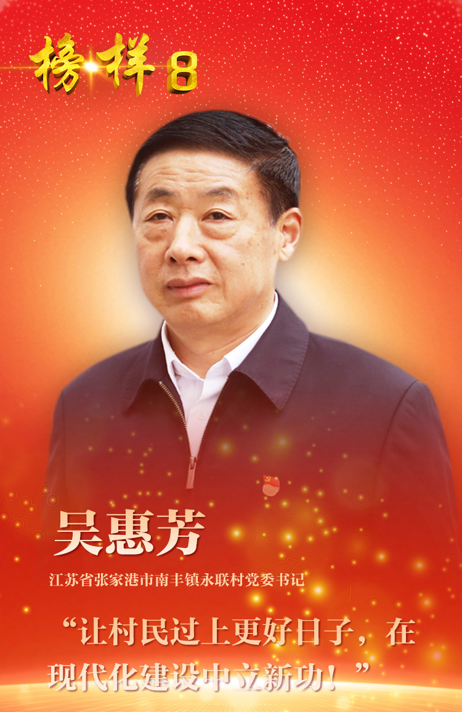

吴惠芳，男，汉族，1960年10月生，中共党员，江苏省张家港市南丰镇永联村党委书记，第十三届、十四届全国人大代表。
从军官到村官，初心不改，乡村振兴路上再立新功。2005年9月，时任解放军驻杭州某师政治部主任的吴惠芳，放弃大城市优越的生活条件，选择自主择业回到家乡永联村。他牢记全心全意为人民服务的宗旨，扎根农村、恪尽职守，坚持抓党建促乡村振兴，研究制定工作方案，提出“居住方式城镇化、生产方式产业化、就业方式多元化、生活方式市民化、管理方式规范化、收入方式多样化”的永联振兴具体目标。18年来，吴惠芳带领全村党员群众一张蓝图绘到底，走出了一条“强富美高”的乡村振兴之路，打造出了一个农业农村现代化的先行示范样本。
把百姓放心上，矢志不渝，携手共同富裕一个不少。他始终将群众利益装在心里，牵头制定《经济合作社社员资格确权办法》，系统构建“股权＋”、“分红＋”、“美好＋”递进式分配体系，从“奖农补副”、“集体持股”到“按户分配”、“充分就业”，再到“为民服务基金”、“信用体系建设”，逐步健全了初次分配、再分配、第三次分配协调配套的制度体系，让村民普遍、公平享受集体经济发展成果。推动投资35亿元，建设占地600多亩的村民集中居住工程——永联小镇，配套农贸市场、医院、商业街、学校等设施，建起文体生活馆、暨阳书画社、永联戏楼、电影院等项目，让村民生活在小镇水乡、绿色工厂、现代农庄的环抱之中。2022年，村民人均纯收入达到6.7万元，过上了“让城里人羡慕的日子”。
谋善治促蝶变，笃行不怠，创建宜居宜业和美乡村。他始终保持追求卓越、敢为人先的劲头，在实现了“物质富足”的基础上，又把目标指向了更高水平的“精神富有”。为了让百姓享受高质量的现代化生活，吴惠芳始终坚持党建引领，推动形成了自治、法治、德治、智治“四治融合”的治理模式，绘就了充满活力、和谐有序的现代乡村新图景。建设村民议事厅，建立“代表大会议大事、议事团体议难事、楼道小组议琐事”的议事机制。建立“文明家庭奖”评价机制，常态化开展“文明楼道”、“身边好人”、“最美永联人”等评选活动。打造永联运行管理中心，全面实现村域治理网格化管理、精细化服务、信息化支撑。在吴惠芳带领下，永联村连续六届获评全国文明村，先后荣获全国先进基层党组织、全国民主法治示范村、全国乡村治理示范村、全国乡村旅游重点村等荣誉。
荣获“全国优秀共产党员”、“全国最美退役军人”、“全国乡村旅游致富带头人”等称号。
